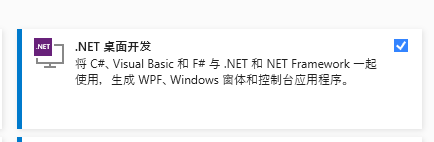
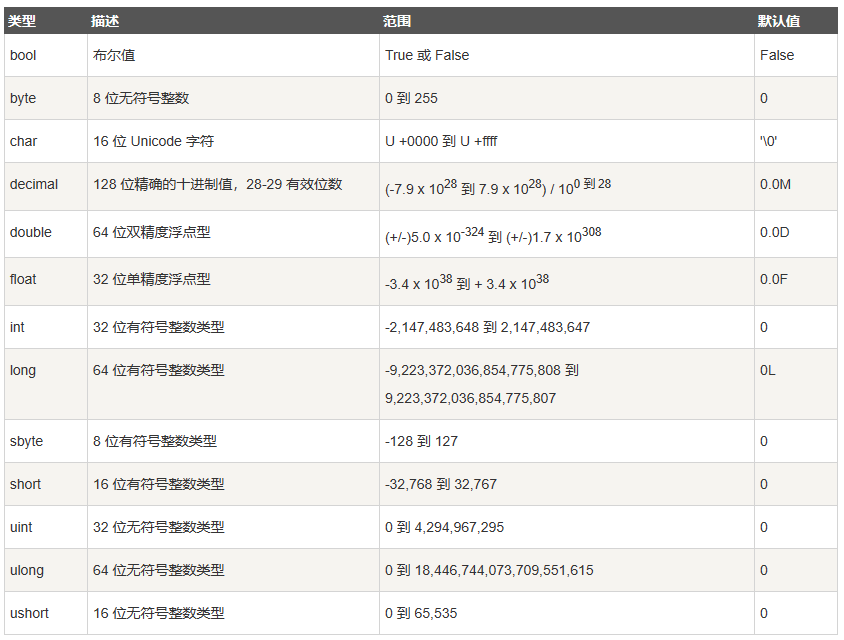
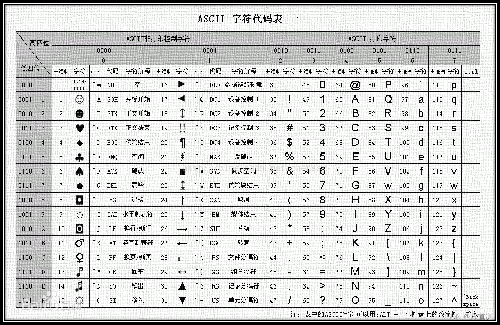
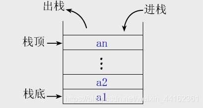
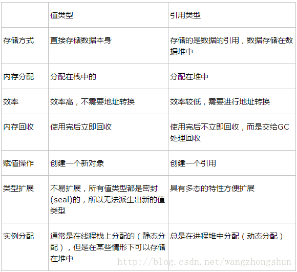
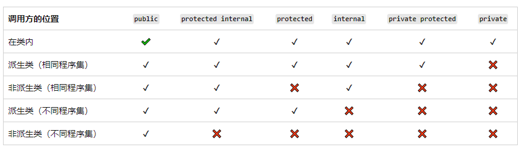

笔记开始时间：2024.1.26 笔记更新时间：2024.2.22 当前笔记状态：基础篇已完结，高级篇暂不更新
前言
你好：
首先感谢你使用这份笔记手册，一起学习，一起进步，本学习笔记是我在自学过程（网课视频在下方链接）中的随手笔记，可能出现遗漏，顺序错误或语法，单词等错误，你可以在自己的学习过程中对这份笔记更正即可。
笔记结合了多个网课资料，顺序较为混乱。
下面是笔记部分参考资料： 视频资料： https://www.bilibili.com/video/BV1gR4y1b7oW/?p=6&share_source=copy_web&vd_source=ea0cf64e8dac6f0193a7e28187a0fccb
c#官方文档：C# 文档 - 入门、教程、参考。 | Microsoft Learn
前言到此结束。下面是笔记部分：
社区版下载地址Visual Studio Community Edition (microsoft.com)
请参考vs官方安装教程： 安装 Visual Studio 并选择首选功能 | Microsoft Learn

注意：
C#是大小写敏感的
所有的语句表达式都必须以（;）结尾
与Java不同的是，文件名可以不与类的名称相同
1//引用命名空间2using ConsoleApp1;3using System;4using System.Reflection.Metadata.Ecma335;5//项目命名空间，大多数也是项目本身的名称6namespace learn { 7 //类名称8 class program9 {10 //方法（函数）11 static void Main()12 {13 //方法体，用于写具体方法代码14 }15 }16}关键字是对编译器有特殊意义的预定保留标识符，不能在程序中用作标示符
单行：//注释内容
多行：/*注释内容*/
注释快捷键（组合键）：ctrl+k ,ctrl+c
解除多行注释：CTRL+k,ctrl+u
输出第一个程序Hello World
xxxxxxxxxx11Console.WriteLine("Hello, World!");Console.Write和Console.WriteLine区别：Console.WriteLine书写完后会换行，而write不会换行；

| 类型 | 举例 |
|---|---|
| 整数类型 | byte、short、int、long |
| 浮点类型 | float、double |
| 十进制类型 | decimal |
| 布尔类型 | bool |
| 字符类型 | string、char |
| 空类型 | null |
xxxxxxxxxx81//创建变量2//数据类型+变量名，例如3int age;4string abc;5char str6//变量赋值7age=12;8abc = "aaa";
每个字符在存储时都对应一个数字
####
数字与字符之间转换的方法
xxxxxxxxxx81//字母转数字2char a='a';3int b =a;4Console.WriteLine(b);5//数字转字母6int a=97;7char b =(char)a;8Console.WriteLine(b);xxxxxxxxxx71//打印字符串防止转义字符生效2Console.WriteLine(@"c:\a\vc\v1");3//字符串声明和拼接4string a = "a";5string b = "b";6Console.WriteLine(a+b);7 xxxxxxxxxx31int a = 10, b = 20;2Console.WriteLine("和为:{0}+{1}={2}",a,b,a+b);3//a,b,a+b 下标为0，1，2所以写为：
xxxxxxxxxx41//返回的值为字符串。2Console.ReadLine();3//将获取的字符串类型的数字转换成int类型4Convert.ToInt32();获取一个数字，并转换为int类型
xxxxxxxxxx51string b="";2Console.WriteLine("请输入一个数");3b=Console.ReadLine();4Convert.ToInt32(b);5Console.WriteLine(b);####
+, -, *, /, *
逻辑与：&&
逻辑或：||
逻辑非：！
( >，<，>=，<=，==)
x?y:z -->如果为true，则取y的值，如果为false，则取z的值
xxxxxxxxxx91if (条件1){2 //语句;满足条件时执行3}4else if(条件2){5 //语句6}7else{8 //语句9}xxxxxxxxxx151switch(变量)2{3 case 值1:{4 contun5 };6 case 值2:{7 break;8 };9 case 值3:{10 break;11 }12 default: {13 //默认情况14 }15};xxxxxxxxxx281//语法2while(条件){3 4}5//创建一格死循环6while(true){7 //语句8}9while(1){10 //语句11}12//打印输出乘法表 13int i = 1, j = 1;14 while (i<=9)15 {16 while (j <= i)17 {18 Console.Write("{1}×{0}={2}\t",i,j,j*i);19 j++;20 if (j > i)21 {22 Console.WriteLine();23 j = 1;24 i++;25 break;26 }27 }28 }xxxxxxxxxx41//语法2for(初始值;条件表达式;增量表达式){3 //语句4};x1// 语法2do{3
4}while(条件表达式)xxxxxxxxxx101
2//类型[] 数组名={};3//声明4int[5] num;5int[] num2;6//赋值7int[] num3 = { 1, 2, 3, 4, 5 };8num2 = new int[100];//创建一个长度为100的数组9num =new int[] {1,2,3,4,5}10//数组使用时用下标xxxxxxxxxx161//方法12//使用for/while循环 3int[] num = { 1, 2, 3, 4, 5 };4for (int i = 0; i < num.Length; i++)5{6 Console.WriteLine(num[i]); 7}8//方法29//使用foreach(只能)10int[] num = { 1, 2, 3, 4, 5 };11foreach (int item in num)12{13 Console.WriteLine(item);14}15
16
xxxxxxxxxx61 string str = "abcdefghijklmnopqrstuvwxyz";2
3 for (int i = 0; i < str.Length; i++)4 {5 Console.WriteLine(str[i]);6 }ToLower()——转换成小写字母、 ToUpper()——转换成大写字母
Trim()——去除字符串两端的空格 TrimStrat()——去除字符串前端的空格 TrimEnd()——去除字符串后端的空格
Split()——分割方法
使用 String.Split 拆分字符串（C# 指南） - C# | Microsoft Learn
下方代码将一个常用短语拆分为一个由每个单词组成的字符串数组。
xxxxxxxxxx71string phrase = "The quick brown fox jumps over the lazy dog.";2string[] words = phrase.Split(' ');3
4foreach (var word in words)5{6 System.Console.WriteLine($"<{word}>");7}分隔符的每个实例都会在返回的数组中产生一个值。 连续的分隔符将生成空字符串作为返回的数组中的值。 下面的示例介绍如何创建空字符串，该示例使用空格字符作为分隔符。
xxxxxxxxxx71string phrase = "The quick brown fox jumps over the lazy dog.";2string[] words = phrase.Split(' ');3
4foreach (var word in words)5{6 System.Console.WriteLine($"<{word}>");7}String.Split 可使用多个分隔符。 下面的示例使用空格、逗号、句点、冒号和制表符作为分隔字符，这些分隔字符在数组中传递到 Split。 代码底部的循环显示返回数组中的每个单词。
xxxxxxxxxx121char[] delimiterChars = { ' ', ',', '.', ':', '\t' };2
3string text = "one\ttwo three:four,five six seven";4System.Console.WriteLine($"Original text: '{text}'");5
6string[] words = text.Split(delimiterChars);7System.Console.WriteLine($"{words.Length} words in text:");8
9foreach (var word in words)10{11 System.Console.WriteLine($"<{word}>");12}String.Split 可采用字符串数组（充当用于分析目标字符串的分隔符的字符序列，而非单个字符）。
xxxxxxxxxx121string[] separatingStrings = { "<<", "..." };2
3string text = "one<<two......three<four";4System.Console.WriteLine($"Original text: '{text}'");5
6string[] words = text.Split(separatingStrings, System.StringSplitOptions.RemoveEmptyEntries);7System.Console.WriteLine($"{words.Length} substrings in text:");8
9foreach (var word in words)10{11 System.Console.WriteLine(word);12}xxxxxxxxxx31static 返回类型 函数名(参数){2 //语句3}xxxxxxxxxx11函数名();xxxxxxxxxx31static 返回类型 函数名(类型 参数名（形参）){2 //语句3}形参（形式参数）
在函数定义中出现的参数可以看做是一个占位符，它没有数据，只能等到函数被调用时接收传递进来的数据，所以称为形式参数，简称形参。
实参（实际参数）
函数被调用时给出的参数包含了实实在在的数据，会被函数内部的代码使用，所以称为实际参数，简称实参。
形参和实参的功能是传递数据，发生函数调用时，实参的值会传递给形参。
形参和实参的区别和联系
形参变量只有在函数被调用时才会分配内存，调用结束后，立刻释放内存，所以形参变量只有在函数内部有效，不能在函数外部使用。
实参可以是常量、变量、表达式、函数等，无论实参是何种类型的数据，在进行函数调用时，它们都必须有确定的值，以便把这些值传送给形参，所以应该提前用赋值、输入等办法使实参获得确定值。
实参和形参在数量上、类型上、顺序上必须严格一致，否则会发生“类型不匹配”的错误。当然，如果能够进行自动类型转换，或者进行了强制类型转换，那么实参类型也可以不同于形参类型。
函数调用中发生的数据传递是单向的，只能把实参的值传递给形参，而不能把形参的值反向地传递给实参；换句话说，一旦完成数据的传递，实参和形参就再也没有瓜葛了，所以，在函数调用过程中，形参的值发生改变并不会影响实参。
修饰符种类
无修饰符：如果一个参数没有油参数修饰符标记，则认为它将按值传递，这将意味着被调用的方法收到原始数据的一份副本；
out：输出参数由被调用的方法赋值，因此按引用传递。如果被调用的方法没有给输出的参数赋值，就会出现编译错误。（下端数据被修改后，上端数据也会随之变化） out最大的用途就是调用者只使用一次方法就能获得多个返回值。
ref：调用者赋初值，并且可以由被调用的方法可选的重新赋值（数据也是按引用传递）。如果被调用的方法未能给ref参数赋值，也不会有编译错误。
其他请参见官方文档：方法参数按值传递。 修饰符启用按引用传递语义，包括只读和 out 参数等区别。 了解不同的参数传递模式以及如何使用它们。 参数修饰符允许一系列可选参数。 - C# | Microsoft Learn
xxxxxxxxxx61static 返回类型 函数名(类型 参数名（形参）){2 //语句3 return 返回值; //使用return返回4}5//接受返回值方法6//定义变量=函数名();参数数组
xxxxxxxxxx71//参数数组传参方式2static int sums(int[] array)3{4 //for循环遍历数组计算5 return sum;6}7
xxxxxxxxxx191static int sum(int x,int y) {2return x + y;3
4}5Console.WriteLine(sum(11111,2232123));6
7//参数数组8//计算任意个数的和9static int sums(int[] array)10{11 int sum = 0;12 for (int i = 0; i < array.Length; i++)13 {14 sum += array[i];15 }16 return sum;17}18int[] a = {1,2,3,4,5,6,7,8,9,10};19Console.WriteLine(sums(a));重载，简单说，就是函数或者方法有相同的名称，但是参数列表不相同的情形，这样的同名不同参数的函数或者方法之间，互相称之为重载函数或者方法。 重载的定义:函数名相同,函数的参数列表不同(包括参数个数和参数类型)，至于返回类型可同可不同。 重载是可使函数、运算符等处理不同类型数据或接受不同个数的参数的一种方法
在函数的内部再次调用这个函数。
xxxxxxxxxx201// f(n)=f(n-1)+f(n-2),其中f(0)=2,f(1)=32 3 static int f(int n)4 {5 if (n == 0)6 {7 return 2;8 }9 else if (n == 1)10 {11 return 3;12 }13 else14 {15 int fn = f(n - 1) + f(n - 2);16 return fn;17 }18 19 }20 Console.WriteLine(f(40));xxxxxxxxxx11const int HP = 100;Enum枚举:枚举是一组命名整型常量,枚举类型是使用 enum 关键字声明的。枚举是值类型，数据直接存储在栈中，而不是使用引用和真实数据的隔离方式来存储,其包含自己的值,且不能被继承或者传递继承,枚举中每个元素的基础类型是 int。可以使用冒号指定另一种整数值类型。
定义与使用枚举类型
xxxxxxxxxx111//定义2enum names3{4 抽烟, 喝酒, 烫头5};6
7static void Main()8{9 //使用 10 Console.WriteLine(names.烫头);11}结构体的作用就是把某一类的变量进行整合，组成一个新的数据类型，比如学生的信息（姓名，性别，年龄，成绩等等）
结构体的定义和使用
xxxxxxxxxx291//定义2struct <name>{3 //访问权限 type name;4}5//使用6struct student7{8 public string name;9 public int age;10 public char sex;11 public int id;12}13static void Main()14{15 //单个学生16 student student1;17 student1 = new student();//实例化18 student1.name = "张三";19 student1.age = 19;20 student1.sex = 'B';21 student1.id = 1000101;22 //多个学生可使用数组管理23 student[] somestudent = new student[100];24 somestudent[0].age = 19;25 somestudent[1].age = 19;26 somestudent[2].age = 19;27 somestudent[0].name = "詹西西";28
29}结构体中不只是可以定义属性，也可以定义函数。
xxxxxxxxxx181struct student2{3 public string name;4 public int age;5 public char sex;6 public int id;7 public void print()8 {9 Console.WriteLine(name + " " + age+);10 }11}12student student1;13student1 = new student();14student1.name = "张三";15student1.age = 19;16student1.sex = 'B';17student1.id = 1000101;18student1.print();
委托（Delegate） 是存有对某个方法(函数)的引用的一种引用类型变量。引用可在运行时被改变。
xxxxxxxxxx481static int jia(int a,int b)2{3
4 return a+b;5}6static int jian(int a, int b)7{8 return a - b;9}10static int cheng(int a, int b)11{12 return a * b;13}14static int chu(int a, int b)15{16 return a / b;17}18//定义委托19delegate int soms(int a, int b);20static void Main()21{22 //委托声明23 soms weituo;24 weituo = add;25 Console.WriteLine(weituo(10, 2));26
27}28// 开发时使用29delegate void whendie();30//程序员131static void play(whendie tip)32{33 Console.WriteLine("正在打仗");34 tip();35}36//程序员237static void stop() 38{ 39 Console.WriteLine("失败，死亡了");40}41static void win() { Console.WriteLine("胜利了"); }42
43static void Main()44{45 play(win);46
47}48
C# 是面向对象的编程语言。 面向对象编程的四项基本原则为：
抽象：将实体的相关特性和交互建模为类，以定义系统的抽象表示。
封装：隐藏对象的内部状态和功能，并仅允许通过一组公共函数进行访问。
继承：根据现有抽象创建新抽象的能力。
多形性：跨多个抽象以不同方式实现继承属性或方法的能力。
面向对象就是一种编码的思想，简称(oop思想)，这种编程思想可以让你在编码的过程中，对于类的使用变得更加的方便快捷，在不同的场合使用不同的类和对象，会让你的程序维护起来更加方便
xxxxxxxxxx121//try中放置可能出现异常的代码2try{3 //代码4}5//捕获到异常时执行6catch(要捕获的异常){7 //代码8}9//不管代码是否出现异常，代码都会执行10finally{11 //代码12}xxxxxxxxxx111//使用try-catch检查用户输入是否合法2 while (true) { 3 try {4 int a = Convert.ToInt32(Console.ReadLine()); 5 int b = Convert.ToInt32(Console.ReadLine());6 break;7 } 8 catch (System.FormatException) {9 Console.WriteLine("你的输入不合法");10 }11 }注意：再try块中的代码如果某一行出现了异常，后面的代码就不会再执行了，会跳到catch中。
类是对一类具有相同特征或行为的事务的统称，是抽象的，不能直接使用
特征被称为：属性
行为被称为：方法
类相当于模板 对象 相当于由模板创造出来的实物
xxxxxxxxxx51class 类名2{3
4}5类名 name =new 类名();xxxxxxxxxx141//定义一个类 2class student3 {4 public long Id;5 public string Name;6 public int Age;7 }8static void Main()9 {10 student C1 = new student();//实例化类赋值11 C1.Id = 202221345612;12 C1.Name = "Test";13 C1.Age = 19;14 }属性在C#中较为独特，它即不同于方法，也不同于字段。
属性依旧遵循大驼峰命名法
属性最常用的书写方法：public int age {get; set;}
如果属性中具有get关键字，说明可以获取该属性的值
如果属性中具有set关键字，说明可以设置该属性的值
xxxxxxxxxx231using System.Collections;2namespace WinFormsApp13{4 public partial class Form1 : Form5 {6 public Form1()7 {8 InitializeComponent();9 }10 11 private void Form1_Load(object sender, EventArgs e)12 {13 ArrayList arrayList = new ArrayList();14 }15 }16}17//ArrayList相关方法18//ArrayList.add --在结尾处添加数据19//ArrayList[-] --修改"-"处的数据20//ArrayList.RemoveAt(-) --移除“-”索引处的数据21//ArrayList.Remove(123) --移除内容为123的数据22//ArrayList.Insert(-,"hello")在索引“-”处插入数据23
xxxxxxxxxx151//list数组声明，在声明List数组时，需要再<>中添加数据类型，如int,string 等；指定存储的数据类型2List<int> list_name=new List<int>;3// 示例4List<int> list1 = new List<int>();5list1.Add(1);6list1.Add(2);7list1.Add(3);8list1.Add(4);9list1.Add(5);10for (int i = 0; i < list1.Count; i++)11{12 Console.WriteLine(list1[i]);13
14}15//List数组也支持自定义的数据类型集合与数组较为类似，都是存储的一组值；
集合中提供了特定的方法，能直接操作集合中的数据，并提供了不同的集合类来实现特定的功能。
简单来说就是数组的升级版，可以动态对集合的长度进行定义和维护。
List泛型的好处指通过允许指定泛型类或方法操作的指定类型，减少了类型的强制转换的需要和运行时的错误的可能性，泛型提供了类型安全
xxxxxxxxxx301Dictionary<int,string> student=new Dictionary<int,string>();2student.Add(20241101, "张ad");3student.Add(20241102, "张er");4student.Add(20241103, "张gt");5student.Add(20241104, "张ff");6//7public string name { get; set; }8
9 public int Age{ get; set; }10 11 public int outs { get; set;}12 public void show() {13 Console.WriteLine("姓名：{0}\n年龄：{1}\n出生年：{2}",name, Age,outs);14 }15Dictionary<int,Class1> student=new Dictionary<int,Class1>();16student.Add(20241101, new Class117{18 name = "text1",19 Age = 19,20 outs=202421
22}) ;23
24foreach (var pair in student)25{26 Console.WriteLine("学生信息：");27 Console.WriteLine("学号：{0}", pair.Key);28 pair.Value.show();29 Console.WriteLine();30}s键与值可以是任何类型，键必须是唯一的，值可以不唯一
使用Add方法添加键值对时，不能添加已有键名
索引模式可以新赋值，也可以修改已有键值
索引值中写的不是索引下标，而是KEY
xxxxxxxxxx41foreach (var pair in student)2{3 //每次循环获取studen字典中的一个值并赋值给pair4}s
基本类型默认值 值类型的默认值：0 引用类型的默认值：null
构造函数是一种方法，其名称与其类型的名称相同。 其方法签名仅包含可选访问修饰符、方法名称和其参数列表；它不包含返回类型。
构造函数在new实例化时会被调用。
一般构造函数是对数据进行初始化的。
xxxxxxxxxx331 class Student2{3 public int Id;4 public string Name;5 public int Age;6 //有参构造函数7 public Student(int date1,string date2,int date3) {8 Id = date1;9 Name = date2;10 Age = date3;11 }12 ///无参构造函数13 public Student() {14 Console.WriteLine("ID:" + Id);15 Console.WriteLine("Name:" + Name);16 Console.WriteLine("Age:" + Age);17 }18 public void show()19 {20 Console.WriteLine("ID:" + Id);21 Console.WriteLine("Name:" + Name);22 Console.WriteLine("Age:" + Age);23
24 }25 static void Main()26{27 //声明时调用有参构造函数28 Student C1 = new Student(202224334,"张三",19);29 //声明时调用无参构造函数30 Student C2 = new Student();31 C1.show();32
33}xxxxxxxxxx491 class Student2{3 private int Id;4 private string Name;5 private int Age;6 public int ID7 {8 //get和set可以一个，为只读或只写，可以单独控制get，set访问权限9 get { return Id; }10 set { Id = value; }11 }12 public string NAME13 {14 get {return Name; }15 set { Name = value; }16 }17 public int AGE18 {19 get { return Age; }20 set { Age = value; }21 }22 //使用下面的语句系统会自动为我们创建数据成员23 public int Addres24 {25 get;26 set;27 }28 //129 public void show()30 {31 Console.WriteLine("ID:" + Id);32 Console.WriteLine("Name:" + Name);33 Console.WriteLine("Age:" + Age);34
35 }36}37 static void Main()38 {39 Student lisir = new Student();{40 ID = 1;41 NAME = "LISI";42 AGE = 19;43 };44 45 Console.WriteLine("ID:" + lisir.ID);46 Console.WriteLine("Name:" +lisir.NAME);47 Console.WriteLine("Age:" + lisir.AGE);48
49 }xxxxxxxxxx61//一般定义变量时2int age =1;3string name = "zhangsan";4//匿名类型(只声明了一个变量名，不指定类型，在进行初始化时会确定类型，确定就不能修改了)5var age=1;6var name="张三";栈的空间较小，但读取速度较快； 栈（Stack）是只允许在一端进行插入或删除操作的线性表。

栈中的数据只能从顶端插入和删除 把数据放入栈顶称为入栈(push)。 把数据从栈顶删除称为出栈（pop）。 -后进先出原则；
堆的空间较大，但读取速度较慢；
堆是一块内存区域，堆里的内存能够以任意顺序存入和移除
常量区（特殊的常量存储区，属于静态存储区）
常量占用内存,只读状态,决不可修改
常量字符串就是放在这里的，程序结束后由系统释放
基本数据类型 基本数据类型常被称为四类八种。
四类八种：
整型（4种）：byte(1 byte)、short(2 byte)、int(4 byte)、long(8 byte)
浮点型（2种）：float(4 byte)、double(8 byte)
字符型（1种）：char(2 byte)
逻辑型（1种）：boolean
(string,数组,自定义的类，内置的类) 引用类型需要两端内存。 第一段用于存储实际的数据，它总是在堆中。 第二段是一个引用，指向数据在堆中存放的位置。
值类型与引用类型的区别

继承是面向对象程序设计中最重要的概念之一。继承允许我们根据一个类来定义另一个类，这使得创建和维护应用程序变得更容易。同时也有利于重用代码和节省开发时间。 当创建一个类时，程序员不需要完全重新编写新的数据成员和成员函数，只需要设计一个新的类，继承了已有的类的成员即可。这个已有的类被称为的基类，这个新的类被称为派生类。 C# 和 .NET 只支持单一继承。 也就是说，类只能继承自一个类。 不过，继承是可传递的。这样一来，就可以为一组类型定义继承层次结构。 比如在一个游戏中，两个人物的类中都具有很多相同的属性，这时我们可以让这两类继承同一个类
xxxxxxxxxx351//继承代码演示2//基类3class Class14 {5 public string name { get; set; }6
7 public int Age{ get; set; }8 9 public int outs { get; set;}10 public void show() {11 Console.WriteLine("姓名：{0}\n年龄：{1}\n出生年：{2}",name, Age,outs);12 }13 }14//派生类：继承基类15 class son_Class2:Class116 {17 public int math {get; set;}18 public int english { get; set;}19 //重写show方法20 public void show()21 {22 Console.WriteLine("姓名：{0}\n年龄：{1}\n出生年：{2}\n数学：{3}\n英语：{4}", name, Age, outs,math,english);23 }24 }25//声明调用26son_Class2 son_Class1 = new son_Class2() { 27Age=12,28name="tex1",29outs=2022,30math=70,31english=7732};33
34
35son_Class1.show();this方法--访问派生类数据成员
base方法--访问基类数据成员
virtual 修饰符不能与 static、abstract``private 或 override 修饰符一起使用。
virtual 关键字用于修改方法、属性、索引器或事件声明，并使它们可以在派生类中被重写。 例如，此方法可被任何继承它的类替代：
xxxxxxxxxx271public virtual double Area()2{3 return x * y;4}5//示例6class Class17 {8 public string name { get; set; }9 public int Age{ get; set; }10 public int outs { get; set;}11 //添加-虚方法(Virtual)12 public virtual void show() {13 Console.WriteLine("姓名：{0}\n年龄：{1}\n出生年：{2}",name, Age,outs);14 }15 }16class son_Class2:Class117 {18 public int math {get; set;}19 public int english { get; set;}20 //重写show方法21 //重写后再次调用时就调用的重写的方法22 public override void show()23 {24 Console.WriteLine("姓名：{0}\n年龄：{1}\n出生年：{2}\n数学：{3}\n英语：{4}", name, Age, outs,math,english);25 }26 }27
xxxxxxxxxx221class Class12 {3 public string name { get; set; }4
5 public int Age{ get; set; }6 7 public int outs { get; set;}8 public void show() {9 Console.WriteLine("姓名：{0}\n年龄：{1}\n出生年：{2}",name, Age,outs);10 }11 }12//派生类：继承基类13 class son_Class2:Class114 {15 public int math {get; set;}16 public int english { get; set;}17 //重写show方法--在基类中的函数不需要加任何关键字，派生类中使用new关键字隐藏基类中的方法18 public new void show()19 {20 Console.WriteLine("姓名：{0}\n年龄：{1}\n出生年：{2}\n数学：{3}\n英语：{4}", name, Age, outs,math,english);21 }22 }
通过在类定义前面放置关键字 abstract，可以将类声明为抽象类。抽象类只有函数的定义，没有函数体。
抽象类不能实例化。 抽象类的用途是提供一个可供多个派生类共享的通用基类定义。 例如，类库可以定义一个抽象类，将其用作多个类库函数的参数，并要求使用该库的程序员通过创建派生类来提供自己的类实现。
xxxxxxxxxx211// compile with: -target:library2public class D3{4 public virtual void DoWork(int i)5 {6 // Original implementation.7 }8}9
10public abstract class E : D11{12 public abstract override void DoWork(int i);13}14
15public class F : E16{17 public override void DoWork(int i)18 {19 // New implementation.20 }21}通过在类定义前面放置关键字 sealed，可以将类声明为密封类。
xxxxxxxxxx41public sealed class D2{3 // Class members here.4}密封类不能用作基类。 因此，它也不能是抽象类。 密封类禁止派生。 由于密封类从不用作基类，所以有些运行时优化可以略微提高密封类成员的调用速度。
在对基类的虚成员进行重写的派生类上，方法、索引器、属性或事件可以将该成员声明为密封成员。 在用于以后的派生类时，这将取消成员的虚效果。 方法是在类成员声明中将 sealed 关键字置于 override 关键字前面。
xxxxxxxxxx41public class D : C2{3 public sealed override void DoWork() { }4}密封类不能被继承，密封方法不能被重写。 密封类不能被继承，密封方法不能被重写。
所有类型和类型成员都具有可访问性级别。 该级别可以控制是否可以从你的程序集或其他程序集中的其他代码中使用它们。 程序集是通过在单个编译中编译一个或多个 .cs 文件而创建的 .dll 或 .exe。 可以使用以下访问修饰符在进行声明时指定类型或成员的可访问性：
public：同一程序集中的任何其他代码或引用该程序集的其他程序集都可以访问该类型或成员。 某一类型的公共成员的可访问性水平由该类型本身的可访问性级别控制。
private：只有同一 class 或 struct 中的代码可以访问该类型或成员。
protected：只有同一 class 或者从该 class 派生的 class 中的代码可以访问该类型或成员。
internal：同一程序集中的任何代码都可以访问该类型或成员，但其他程序集中的代码不可以。 换句话说，internal 类型或成员可以从属于同一编译的代码中访问。
protected internal：该类型或成员可由对其进行声明的程序集或另一程序集中的派生 class 中的任何代码访问。
private protected：该类型或成员可以通过从 class 派生的类型访问，这些类型在其包含程序集中进行声明。

其他修饰符
static-静态
在一个类中，如果某个属性用static修饰，则该属性可以被实例化对象共享，而普通属性则不可以
static 修饰符可用于声明 static 类。 在类、接口和结构中，可以将 static 修饰符添加到字段、方法、属性、运算符、事件和构造函数。
static修饰的内容不是存储在某个对象中，而是存储在静态存储区中的。
接口类似于类，接口使用
接口中只有方法的定义，没有具体的方法体
xxxxxxxxxx141//接口定义2public interface Ijiekou3{4 //方法体5 public void mains();6}7//接口实现8public class jiekou : Ijiekou9{10 public void mains()11 {12 Console.WriteLine("这是一个接口实现方法");13 }14}与类不同一个类可以继承多个接口
xxxxxxxxxx451public interface Ijiekou2{3 //方法体4 public void mains();5}6public interface Ijicheng : Ijiekou7{8 public void jicheng();9 10}11//继承多个接口12//接口定义13public interface Ijiekou14{15 //方法体16 public void mains();17}18public interface Ijicheng19{20 public void jicheng();21 22}23
24//接口实现25public interface Ijiekou26{27 //方法体28 public void mains();29}30public interface Ijicheng31{32 public void jicheng();33 34}35public class jiekou2 : Ijiekou, Ijicheng36{37 public void mains()38 {39 Console.WriteLine("这是一个接口实现方法");40 }41 public void jicheng()42 {43 Console.WriteLine("这是第二个继承接口");44 }45}参考官方文档
参考官方文档
例如，计算两个数的和时，两个类除了数据类型外，其他基本相同，如果再写一遍较为麻烦，所以可以使用泛型。
xxxxxxxxxx291 class add<T>2 {3
4 public T a;5
6
7
8 public add(T a)9 {10 this.a = a;11 }12 public T GetValue()13 {14 15 //执行语句16 return a;17 }18 19
20 }21 class mains22 {23 static void Main() { 24 add<int> n1 = new add<int>(1);25 Console.WriteLine(n1.GetValue());26 add<double> n2 = new add<double>(1.23);27 Console.WriteLine(n2.GetValue());28 }29 }【C#编程-第四季-高级篇-宇宙最简单2022最新版】 https://www.bilibili.com/video/BV1mb4y1q78H/?p=2&share_source=copy_web&vd_source=ea0cf64e8dac6f0193a7e28187a0fccb
##